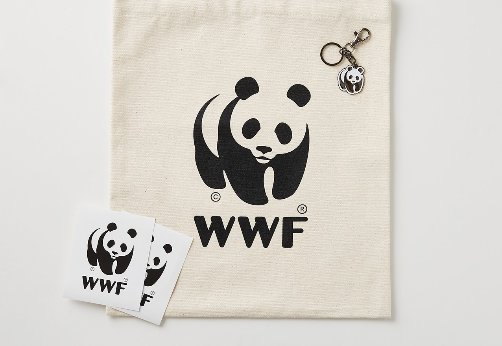

생존의 벼랑 끝에 서 있는
북극곰을 지켜주세요


*퀴즈 참여 현황은 매주 업데이트 됩니다
북극은 북극곰의 주 서식지이자 사냥터지만
이 순간에도 녹아 내리는 빙하로 인해 북극곰은 갈 곳을 잃었습니다

지구온난화로 북극의 온도는 빠르게 상승하고 빙하는 더욱 빠르게 녹아가고 있습니다.
빙하가 무너져 내리는 경고를 결코 무시해서는 안됩니다.
23년 동안 녹은 빙하의 양
앞으로 높아질 지구 해수면
예상 침수 피해 인원
먹이사슬의 최상위 포식자인 북극곰이 멸종된다면
생태계의 불균형으로 인해 지구 전체의 위기로 이어집니다

WWF는 1961년에 설립된
세계 최대 비영리 환경보전 기관으로,
세계 100여 개국에서 600만 후원자들과 함께
활발히 활동하고 있습니다.
WWF는 사람과 자연이 조화를 이루며
살아가는 미래를 만들어가고자 합니다.

월 2만원 정기후원
팔찌/파우치

월 3만원 정기후원
팔찌/파우치

월 5만원 정기후원
팔찌/파우치
* 정기 후원에 참여하고 연말 정산 세액 공제 혜택 받으세요!
WWF와 함께 북극곰을 지켜주세요